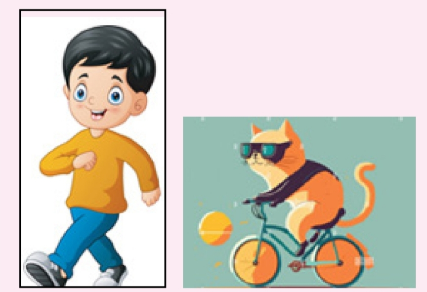

01
The GPS can locate the place you want ________.
GPS သည် သင်ရှာလိုသောနေရာကို မည်မျှတိကျစွာ ရှာဖွေနိုင်သနည်း။
a. roughly
b. exactly
c. nearly
d. almost exactly
✓ ANSWERD — almost exactly
မှန်ကန်သော ရွေးချယ်မှုဖြစ်သည်။
7A Reading · 7B Vocabulary · 7C Participle Phrases
အဖြေမှန်ကို ရွေးချယ်ပါ။
GPS သည် သင်ရှာလိုသောနေရာကို မည်မျှတိကျစွာ ရှာဖွေနိုင်သနည်း။
မှန်ကန်သော ရွေးချယ်မှုဖြစ်သည်။
GPS သည် နေရာတစ်ခုသို့ လမ်းညွှန်ရန် မည်သည့်စနစ်ဖြစ်သနည်း။
မှန်ကန်သော ရွေးချယ်မှုဖြစ်သည်။
Civilian use ဟူသော စကားလုံး၏ အဓိပ္ပာယ်မှာ အဘယ်နည်း။
မှန်ကန်သော ရွေးချယ်မှုဖြစ်သည်။
GPS ကို မည်သည့်ရည်ရွယ်ချက်ဖြင့် အသုံးပြုသနည်း။
မှန်ကန်သော ရွေးချယ်မှုဖြစ်သည်။
GPS သည် မည်သည့်နေရာတွင် အလုပ်လုပ်သနည်း။
မှန်ကန်သော ရွေးချယ်မှုဖြစ်သည်။
GPS သည် မည်သူများအတွက် အသုံးဝင်သနည်း။
မှန်ကန်သော ရွေးချယ်မှုဖြစ်သည်။
GPS ကို မည်သည့်အချိန်တွင် အသုံးပြုနိုင်သနည်း။
မှန်ကန်သော ရွေးချယ်မှုဖြစ်သည်။
GPS ကို မည်သည့်အခြေအနေတွင် အသုံးပြုနိုင်သနည်း။
မှန်ကန်သော ရွေးချယ်မှုဖြစ်သည်။
GPS အချက်ပြမှုကို အနှောင့်အယှက်ဖြစ်စေသော အရာများမှာ အဘယ်နည်း။
မှန်ကန်သော ရွေးချယ်မှုဖြစ်သည်။
GPS ၏ အနာဂတ်ဖြစ်နိုင်ခြေမှာ အဆုံးမရှိလုနီးပါး ဖြစ်သည်။
မှန်ကန်သော ရွေးချယ်မှုဖြစ်သည်။
T = မှန်၊ F = မှား၊ NG = စာပိုဒ်တွင် မဖော်ပြထား
GPS မပေါ်ပေါက်မီ နှစ်ပေါင်းများစွာကတည်းက လူတို့ မျှော်လင့်ခဲ့ကြသည်။
NOT GIVEN — စာပိုဒ်တွင် မဖော်ပြထား
GPS ကို အပိုင်းသုံးပိုင်းဖြင့် ဖွဲ့စည်းထားသည်။
FALSE — မှား
GPS ကို ရေခဲမြစ်ဒေသများတွင် အသုံးပြုနိုင်သည်။
TRUE — မှန်
GPS ဂြိုဟ်တုများသည် ကမ္ဘာကို တစ်နေ့တစ်ကြိမ် ပတ်သည်။
FALSE — မှား
GPS သည် အတားအဆီးများကို ကျော်လွှားနိုင်သည်။
NOT GIVEN — စာပိုဒ်တွင် မဖော်ပြထား
ကိုယ်ပိုင်စကားဖြင့် ဝါကျပြည့်ဖြေဆိုပါ။
GPS ဟူသော အမည်ကို မည်သို့ ရရှိခဲ့သနည်း။
GPS သည် ကမ္ဘာတစ်ဝန်း တည်နေရာသတ်မှတ်ခြင်းနှင့် လမ်းညွှန်ခြင်းကို ဆောင်ရွက်နိုင်သောကြောင့် Global Positioning System ဟု အမည်ရသည်။
GPS ကို ပထဝီဝင်ဆိုင်ရာ ကိရိယာဟု အဘယ်ကြောင့် ခေါ်သနည်း။
ကမ္ဘာမြေမျက်နှာပြင်၏ ပထဝီဝင်ဆိုင်ရာ အချက်အလက်များကို ပြသနိုင်သောကြောင့် ဖြစ်သည်။
GPS သည် ပစ္စည်းပို့ဆောင်ရေးကုမ္ပဏီများအတွက် အဘယ်ကြောင့် အသုံးဝင်သနည်း။
ရောက်ရှိမည့်အချိန်ကို တိကျစွာ ခန့်မှန်းနိုင်ခြင်း၊ ဖောက်သည်များကို အချိန်မီတုံ့ပြန်နိုင်ခြင်းနှင့် ဝန်ဆောင်မှုတိုးတက်စေခြင်းတို့ကြောင့် ဖြစ်သည်။
ထိခိုက်ဒဏ်ရာရသူများရှိသော ယာဉ်မတော်တဆမှုတစ်ခုကို တွေ့ပါက GPS ကို မည်သို့ အသုံးပြုမည်နည်း။
အနီးဆုံး အရေးပေါ်ကူညီရေးဌာန သို့မဟုတ် ရဲစခန်းကို ရှာဖွေပြီး အကူအညီတောင်းမည်။
GPS သည် သင့်နေ့စဉ်ဘဝတွင် မည်သို့ အကူအညီပေးသနည်း။
မရောက်ဖူးသောနေရာများ၊ အမြန်ဆုံးလမ်းကြောင်းများနှင့် အနီးရှိ ဆိုင်များကို ရှာဖွေရန် ကူညီသည်။
Word Box မှ သင့်တော်သော အလုပ်အကိုင်အမည်ကို ဖြည့်ပါ။
မြေတိုင်းတာမှုကို တိကျထိရောက်စေရန် GPS သုံးသူများ
မြေတိုင်းပညာရှင်များ
မသိသေးသောဒေသများကို စူးစမ်းလေ့လာသူများအတွက် GPS သည် အသုံးဝင်သည်။
စူးစမ်းရှာဖွေသူများ
လေထဲနှင့် မြေပြင်တွင် မိမိတည်နေရာကို သိရန် GPS သုံးသူများ
လေယာဉ်မှူးများ
မရင်းနှီးသောလမ်းများတွင် လမ်းညွှန်ချက်ရရှိသူများ
ယာဉ်မောင်းများ
သမုဒ္ဒရာဖြတ်၍ ရေယာဉ်မောင်းနှင်ရာတွင် GPS သုံးသူများ
သင်္ဘော/လှေကပ္ပတိန်များ
မိုးလေဝသဖြစ်စဉ်များ၏ တည်နေရာကို တိကျစွာ သိရှိရန် GPS သုံးသူများ
မိုးလေဝသခန့်မှန်းပညာရှင်များ
နေ့စဉ် စမတ်ဖုန်း GPS သုံးစွဲသူများ
သုံးစွဲသူများ
GPS သည် _________ များ၏ အွန်လိုင်းလုပ်ငန်းများကို ပိုမိုဆောင်ရွက်နိုင်စေမည်။
ဘူမိဗေဒပညာရှင်များ
စစ်ရေးအသုံးချမှုအတွက် GPS သုံးသူများ
စစ်သားများ
တောင်တက်လမ်းကြောင်းနှင့် အမြင့်ပြောင်းလဲမှုများကို မှတ်တမ်းတင်သူများ
တောင်တက်/ခြေလျင်ခရီးသွားသူများ
Compound adjective / noun များနှင့် အဓိပ္ပာယ်များကို တွဲပါ။
| Column A | Column B |
|---|---|
| 1. near-pinpoint | a. using signals from satellites to guide or direct its operation |
| 2. magic-like | b. having the capability of a system or device to resist the effects of intentional interference |
| 3. anti-jamming | c. nearly exact or very close to a precise location |
| 4. receiver-processor | d. having a quality or characteristics that is enchanting, extraordinary, or seeming impossible |
| 5. satellite-guided | e. a device or component in a system that has both receiving and processing functions |
တည်နေရာနီးပါးတိကျ
မှော်ဆန်သကဲ့သို့
အနှောင့်အယှက်အချက်ပြမှုကို တားဆီးနိုင်
လက်ခံနှင့်စီမံဆောင်ရွက်နိုင်သောကိရိယာ
ဂြိုဟ်တုအချက်ပြမှုဖြင့် လမ်းညွှန်
Exercise A မှ စကားလုံးများကို ဖြည့်ပါ။
လက်ခံခြင်းနှင့် စီမံဆောင်ရွက်ခြင်း နှစ်မျိုးစလုံးနှင့်ဆိုင်သော နည်းပညာ
စစ်ရေးလမ်းညွှန်မှုကို တိကျယုံကြည်စိတ်ချရစေသော နည်းပညာ
စင်တီမီတာအဆင့် တိကျမှုကို ပေးစွမ်းသော GPS
ဂြိုဟ်တုအချက်ပြမှုဖြင့် တည်နေရာနှင့် လမ်းညွှန်ချက်ပေးသော စနစ်များ
ကမ္ဘာတစ်ဝန်း လမ်းညွှန်နိုင်သည့် မှော်ဆန်သကဲ့သို့သော GPS
သူမ၏ စင်မြင့်ဖျော်ဖြေမှုမှာ အံ့အားသင့်ဖွယ် ဖြစ်သည်။
မိုးလေဝသပညာရှင်များ၏ ဂြိုဟ်တုအခြေပြု ခန့်မှန်းမှု
အသေးစိတ်အချက်များကို တိကျစွာ ဖမ်းယူနိုင်သော ကင်မရာ
အွန်လိုင်းငွေလွှဲမှုကို ကာကွယ်ရန် အနှောင့်အယှက်ခံနိုင်သော လုံခြုံရေးစနစ်
ကြိုးမဲ့ဆက်သွယ်ရေးတွင် အချက်အလက်လက်ခံ၍ စီမံသည့် ပေါင်းစပ်ကိရိယာ
Present / Past participles နှင့် dangling modifiers ကို လေ့လာပါ။
A participle is a verb form that modifies a noun. Present participles commonly end in -ing; past participles often end in -ed or take an irregular form.
Participle ဆိုသည်မှာ noun ကို အထူးပြုဖော်ပြသော verb ပုံစံဖြစ်သည်။ Present participle သည် များသောအားဖြင့် -ing ဖြစ်ပြီး past participle သည် -ed သို့မဟုတ် irregular form ဖြစ်နိုင်သည်။
ပေးထားသော စာမျက်နှာပုံထဲရှိ Picture A / B နှင့် ဝါကျများကို နှိုင်းယှဉ်လေ့လာပါ။

Picture A: Riding along on my bike, a cat ran into me.
Picture B: Aged 6, his mother remarried.
ဝါကျနှစ်ခုလုံးတွင် participle phrase က မမှန်ကန်သော subject ကို ညွှန်းနေသော dangling modifier ပြဿနာ ရှိသည်။
Picture A မှ participle ကိုရှာပြီး ဝါကျပြဿနာကို ရှင်းပြပါ။
စက်ဘီးစီးသူသည် “I” ဖြစ်သော်လည်း မူရင်းဝါကျတွင် ကြောင်က စီးနေသကဲ့သို့ ဖြစ်နေသည်။
Picture B မှ participle ကိုရှာပြီး ဝါကျပြဿနာကို ရှင်းပြပါ။
အသက်ခြောက်နှစ်ရှိသူသည် သားဖြစ်သော်လည်း မိခင်၏အသက် ခြောက်နှစ်ဟု ထင်ရစေသည်။
a. Result of an action
The plane took off, making a disturbing sound.
b. Reason
Running for class, he slipped.
c. Simultaneous action
Crossing the road, he waved.
d. Additional information
I rode my bike, whistling.
a = ရလဒ်၊ b = အကြောင်းရင်း၊ c = တစ်ချိန်တည်းဖြစ်သော လုပ်ဆောင်ချက်၊ d = subject အကြောင်း ထပ်ဆောင်းဖော်ပြချက်။
a. Condition for a result.
a = အခြေအနေ၊ b = အကြောင်းရင်း၊ c = subject အကြောင်း ထပ်ဆောင်းဖော်ပြချက်။
ဝါကျနှစ်ကြောင်းကို -ing participle ဖြင့် ပေါင်းပြီး function (a–d) ကို သတ်မှတ်ပါ။
GPS သည် ဖောက်သည်လိုအပ်ချက်များကို အချိန်မီတုံ့ပြန်စေပြီး ဝန်ဆောင်မှုတိုးတက်စေသည်။
a — result | GPS သည် ဖောက်သည်လိုအပ်ချက်များကို အချိန်မီတုံ့ပြန်စေပြီး ဝန်ဆောင်မှုတိုးတက်စေသည်။
မည်သူ့ကိုမျှ မထိခိုက်စေလိုသောကြောင့် ထပ်မမေးတော့ပါ။
b — reason | မည်သူ့ကိုမျှ မထိခိုက်စေလိုသောကြောင့် ထပ်မမေးတော့ပါ။
သူမ အအေးမိပြီး ဖျားနေသော်လည်း ဥယျာဉ်ရှိအပင်များကို ရေလောင်းခဲ့သည်။
b — supplied key; the meaning is awkward | သူမ အအေးမိပြီး ဖျားနေသော်လည်း ဥယျာဉ်ရှိအပင်များကို ရေလောင်းခဲ့သည်။
ခရီးဆောင်အိတ်ဖွင့်ချိန် သွားတိုက်တံယူရန် မေ့ခဲ့ကြောင်း သိလိုက်သည်။
c — simultaneous action | ခရီးဆောင်အိတ်ဖွင့်ချိန် သွားတိုက်တံယူရန် မေ့ခဲ့ကြောင်း သိလိုက်သည်။
GPS သည် မိုးလေဝသအချက်အလက်ပေး၍ တောင်သူများကို စိုက်ပျိုးရေးအစီအစဉ်ချရာတွင် ကူညီသည်။
a — result | GPS သည် မိုးလေဝသအချက်အလက်ပေး၍ တောင်သူများကို စိုက်ပျိုးရေးအစီအစဉ်ချရာတွင် ကူညီသည်။
အပြန်အလှန်နားလည်မှုတိုးလာ၍ ပိုမိုရင်းနှီးလာကြသည်။
d — additional information | အပြန်အလှန်နားလည်မှုတိုးလာ၍ ပိုမိုရင်းနှီးလာကြသည်။
ပိုကောင်းသော မနက်ဖြန်ကို မျှော်လင့်၍ ခရီးဆက်ရန် ဆုံးဖြတ်ခဲ့သည်။
d — additional information | ပိုကောင်းသော မနက်ဖြန်ကို မျှော်လင့်၍ ခရီးဆက်ရန် ဆုံးဖြတ်ခဲ့သည်။
အမျိုးသမီးသည် လေးလံသောခြင်းတောင်းကို သယ်၍ ဈေးမှထွက်လာသည်။
c — simultaneous action | အမျိုးသမီးသည် လေးလံသောခြင်းတောင်းကို သယ်၍ ဈေးမှထွက်လာသည်။
အဓိကအစားအစာ စားပြီးနောက် အချိုပွဲစာရင်းတောင်းခဲ့သည်။
b — supplied key; sequence is the clearer function | အဓိကအစားအစာ စားပြီးနောက် အချိုပွဲစာရင်းတောင်းခဲ့သည်။
စာကိုဖတ်ရင်း အရေးကြီးသောအချက်များကို မျဉ်းသားခဲ့သည်။
c — simultaneous action | စာကိုဖတ်ရင်း အရေးကြီးသောအချက်များကို မျဉ်းသားခဲ့သည်။
Past participle phrase ဖြင့် ပေါင်းပြီး function (a–c) ကို ဖော်ပြပါ။
မိုးခြိမ်းသံကြောင့် ကြောက်လန့်သော ခွေးသည် ဆိုဖာနောက်၌ ပုန်းသည်။
Function b | မိုးခြိမ်းသံကြောင့် ကြောက်လန့်သော ခွေးသည် ဆိုဖာနောက်၌ ပုန်းသည်။
မိဘများရွေးပေးသောဝတ်စုံ ဝတ်ဆင်ပြီး အေးအေးသည် မင်္ဂလာခန်းမထဲ ဝင်လာသည်။
Function c | မိဘများရွေးပေးသောဝတ်စုံ ဝတ်ဆင်ပြီး အေးအေးသည် မင်္ဂလာခန်းမထဲ ဝင်လာသည်။
ပွဲမတိုင်မီ ပုံမှန်လေ့ကျင့်ထားသော ကစားသမားများသည် အနိုင်ရနိုင်သည်။
Function a | ပွဲမတိုင်မီ ပုံမှန်လေ့ကျင့်ထားသော ကစားသမားများသည် အနိုင်ရနိုင်သည်။
ဟင်းသီးဟင်းရွက်များကို လှပစွာလှီးဖြတ်ပြီး အသုပ်ပြုလုပ်ခဲ့သည်။
Function c | ဟင်းသီးဟင်းရွက်များကို လှပစွာလှီးဖြတ်ပြီး အသုပ်ပြုလုပ်ခဲ့သည်။
ညွှန်ကြားချက်မတိကျသဖြင့် အလုပ်သမားများ အချိန်ကြာခဲ့သည်။
Function b | ညွှန်ကြားချက်မတိကျသဖြင့် အလုပ်သမားများ အချိန်ကြာခဲ့သည်။
သူ့ကိုယ်ပိုင်စိတ်ကူးဖြင့် တည်ဆောက်ထားသောအိမ်သည် ဒီဇိုင်းနှင့်အရောင်ထူးခြားသည်။
Function b | သူ့ကိုယ်ပိုင်စိတ်ကူးဖြင့် တည်ဆောက်ထားသောအိမ်သည် ဒီဇိုင်းနှင့်အရောင်ထူးခြားသည်။
အပူချိန်နိမ့်ဖြင့် ကြာရှည်ချက်ထားသော အသားသည် နူးညံ့အရသာရှိသည်။
Function b | အပူချိန်နိမ့်ဖြင့် ကြာရှည်ချက်ထားသော အသားသည် နူးညံ့အရသာရှိသည်။
မတူကွဲပြားမှုများကို လေးစားသည့် ယဉ်ကျေးသောအပြုအမူသည် အခြားသူများကို စိတ်ချမ်းသာစေသည်။
Function c — supplied key; original wording is unnatural | မတူကွဲပြားမှုများကို လေးစားသည့် ယဉ်ကျေးသောအပြုအမူသည် အခြားသူများကို စိတ်ချမ်းသာစေသည်။
အခြားသူများအတွက် စိတ်ရင်းမှန်ဖြင့် စိုးရိမ်ပေးရာတွင် ပါဝင်ပါက သူတို့အခြေအနေကို နားလည်နိုင်သည်။
Function a | အခြားသူများအတွက် စိတ်ရင်းမှန်ဖြင့် စိုးရိမ်ပေးရာတွင် ပါဝင်ပါက သူတို့အခြေအနေကို နားလည်နိုင်သည်။
ဝိုင်နီဆော့စ်ဖြင့် ချက်ထားသော ဘဲသားသည် ပိုအရသာရှိနိုင်သည်။
Function a | ဝိုင်နီဆော့စ်ဖြင့် ချက်ထားသော ဘဲသားသည် ပိုအရသာရှိနိုင်သည်။
Present / Past participle မှန်ကန်သောပုံစံကို ရွေးပါ။
ပရိသတ်ကြောင့် ရှက်ရွံ့သွား၍ ခေါင်းညိတ်ခဲ့သည်။
ရွေးချယ်ထားသော participle ပုံစံ
ဒေါသတကြီး အော်ဟစ်ရင်း စုမေ အခန်းမှ ပြေးထွက်သွားသည်။
ရွေးချယ်ထားသော participle ပုံစံ
ဝမ်းနည်းဖွယ်သတင်းကြောင့် တုန်လှုပ်ပြီး လဲကျသွားသည်။
ရွေးချယ်ထားသော participle ပုံစံ
ကျောင်းသားများကို ပိုနားထောင်ခြင်းဖြင့် ဆရာသည် ဆက်ဆံရေးကောင်းတည်ဆောက်နိုင်သည်။
ရွေးချယ်ထားသော participle ပုံစံ
မှန်ကန်သောနားလည်မှု ရရှိပါက အရာအားလုံးကို မှန်ကန်စွာမြင်နိုင်သည်။
ရွေးချယ်ထားသော participle ပုံစံ
JK Rowling ရေးသားခဲ့သော Harry Potter စာအုပ်များကို ရုပ်ရှင်ပြုလုပ်ခဲ့သည်။
ရွေးချယ်ထားသော participle ပုံစံ
မြေဩဇာကောင်းသောမြေတွင် စိုက်ပျိုးထားသော ခရမ်းချဉ်သီးများသည် ကြီးမားအရသာရှိသည်။
ရွေးချယ်ထားသော participle ပုံစံ
မကောင်းသောအတိတ်ကို အမြဲတွေးနေပါက စိတ်သက်သာရာမရနိုင်ပါ။
ရွေးချယ်ထားသော participle ပုံစံ
လက်ရှိသတင်းအချက်အလက်ကြောင့် စိတ်ရှုပ်ထွေးပြီး လူငယ်သည် စိတ်ဓာတ်ကျသွားသည်။
ရွေးချယ်ထားသော participle ပုံစံ
ရုပ်ရှင်ကြည့်ရင်း မိမိနိုင်ငံ၏ အဖြစ်အပျက်များကို စိတ်ကူးမြင်ယောင်ခဲ့သည်။
ရွေးချယ်ထားသော participle ပုံစံ